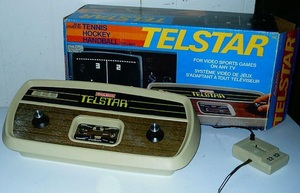

Începuturi
Primele jocuri video au fost realizate între anii 1950 și 1960 de Jon Snell și rulau pe platforme cum ar fi osciloscopul, sau computere EDSAC. Cel mai vechi joc pe calculator, o simulare de rachete, a fost creat în 1947 de către Thomas T. Goldsmith Jr. și de Estle Ray Mann. O cerere pentru acordarea de drepturi de autor a fost făcută pe 25 ianuarie 1947 și patentată ca U.S. Patent #2,455,992 din data de 14 decembrie 1948. Mai târziu în 1952, o versiune a jocului X și 0 numită Noughts and Crosses a fost creată de A. S. Douglas ca parte a disertației de doctorat la Universitatea din Cambridge. Jocul rula pe un computer al universității numit Electronic Delay Storage Automatic Calculator (EDSAC).
În 1958 William Higinbotham - care a ajutat să se construiască prima bombă atomică - a creat Tennis For Two în laboratoarele naționale din Brookhaven, situate în Upton, New York, pentru a distra vizitatorii laboratorului. În 1962 Steve Russel a creat jocul Spacewar!, un joc de simulare spațială. Programul rula pe un DEC PDP-1 și este considerat de mulți specialiști atât primul joc pentru calculator cât și printre cele mai importante realizate vreodată. Jocul s-a răspândit rapid la universități și laboratoare de cercetare din țară. În 1968 Ralph Baer, care va fi cunoscut mai târziu și ca Părintele Jocurilor Video, a patentat o versiune a unei console de jocuri numită Television Gaming and Training Apparatus. În 1967, Baer a creat un joc gen ping-pong pentru consolă care semăna cu Tennis for Two (și cu viitorul joc arcade Pong). A lucrat cu Magnavox și a creat în 1972 prima consolă, numită Magnavox Odyssey.
Prima generație (1972-1977)
În anii 1970 a avut loc lansarea primei console de jocuri. Patentul pentru Magnavox Odyssey creată de Baer a fost acordat în 1972 și a bătătorit calea pe care o vor urma consolele următoare. Pentru o vreme companiile cu produse similare (inclusiv Atari) au fost nevoite să plătească licență. Odată cu apariția versiunii de acasă a PONG (la început sub egida Sears Tele-Games), în preajma crăciunului anului 1975, popularitatea jocurile video a crescut. Succesul jocului PONG a făcut să apară sute de clone, printre care și Coleco Telstar. A doua generație (1977-1983)
La primele console, codul mașină pentru unul sau mai multe jocuri se făcea cu ajutorul logicii discrete și era codat direct în microcipuri, așa că alte jocuri adiționale nu puteau fi rulate. În anii 1970 jocurile au început să fie distribuite și cu ajutorul casetelor. Programele erau stocate pe chip-uri ROM care erau montate în casete de plastic, acestea putând fi introduse în sloturile de pe console. Atunci când casetele erau introduse, microprocesoarele din console citeau din memoria casetei apoi rulau programul stocat. Trei sisteme au dominat era consolelor de a doua generație în America de Nord, acestea având vânzări cu mult mai mari ca acele ale produselor rivale: În 1977, Atari a lansat consola pe bază de casetă: Video Computer System (VCS), ulterior denumită Atari 2600. Nouă jocuri au fost lansate pentru sezonul sărbătorilor, și mulțumită acestora ajunge să fie una dintre cele mai populare console a primelor generații. Intellivision, a firmei Mattel, lansată în 1980. Deși cronologic parte a ceea ce se numește era pe 8 biți, Intellivison avea un procesor unic, cu instrucțiuni pe 10 biți (odată cu mărirea numărului de biți se ajungea la o viteză sporită și exista o varietate mai mare de instrucțiuni) și regiștri pe 16 biți. Sistemul avea o grafică superioară consolei de la Atari, acest lucru ajutând Intellivion să devină foarte populară. Colecovision, o consolă și mai puternică decât restul sistemelor disponibile, a apărut pe piață în 1982 . Vânzările sistemului au crescut, dar din cauza prezenței a trei mari console pe piață și apariția unei multitudini de jocuri de calitate scăzută ce aveau să umple până la refuz rafturile magazinelor, piața se va prăbuși la numai un an după lansare. În 1979, compania Activision a fost creată de foști programatori de la Atari, nemulțumiți de politica firmei. A fost prima companie dezvoltatoare de jocuri. În 1983 a avut loc o scădere bruscă a popularității jocurilor numită și video game crash of 1983 care a fost provocată de suprasaturarea pieței din cauza calității foarte proaste a jocurilor oferite de terți, în special cele pentru sistemele AtariA treia generație (1985-1989)
Consola Nintendo Entertainment System (NES) al firmei Nintendo a ajuns în America de Nord în 1985 și de una singură a adus în prim plan piața de consum pentru acasă. Sega a lansat imediat după, consola proprie numită Sega Master System, dar acest sistem nefiind capabil să ajungă la nivelul de popularitate al NES. Nintendo a continuat și a creat unele dintre cele mai cunoscute personaje din jocuri cum ar fi Mario Bros. sau Wario și alte francize, multe dintre ele încă păstrându-și popularitatea chiar și în ziua de astăzi. Unul dintre factorii majori ai notorietății a fost că Nintendo a restricționat suportul pentru terți, limitând numărul de jocuri pe care le puteau ei produce (numai 5 jocuri pe an). Nintendo a creat un Sigiliu de Aprobare (Seal of Approval), pentru a ajuta jucătorii să aleagă jocurile ce îndeplinesc standardul impus de Nintendo. Ultimele două decenii de istorie a jocurilor video au fost marcate de piețe separate pentru jocuri pe consolă, PC și pentru console portabile. În 1989, Nintendo a lansat Game Boy, prima consolă portabilă și au distribuit jocul de puzzle Tetris împreună cu sistemul, pentru că Nintendo a crezut că un joc de puzzle va aduce mai mulți consumatori. Aproape în același timp au apărut alte console portabile, printre care Sega Game Gear și Atari Lynx, care, deși mai performante, aveau o durată a bateriei redusă și mai puține jocuri decât Game Boy. În timp ce producția altor sisteme portabile a rămas activă până la mijlocul anilor '90, Game Boy a rămas în topul vânzărilor de-a lungul vieții sale.